Mismo contenido real de Cordero con piel de lobo (textos e imágenes del PDF), contado de dos maneras. Cada fila es un momento del scroll: a la izquierda, todo hacia abajo; a la derecha, mitad y mitad que se suelta a ancho completo al llegar a las imágenes. En ninguna de las dos se repite lo que ya mostró la home: no vuelve el resumen, ni los accesos, ni el índice.
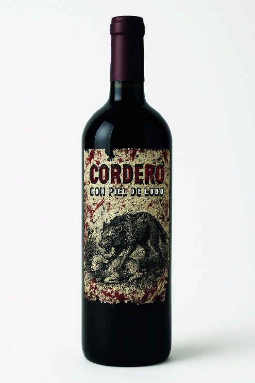
Título enorme a lo ancho, datos debajo y una foto de cabecera. Clásico de case study.
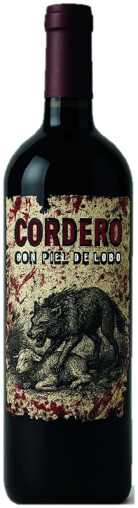
Botella 3D fija · de frenteEl objeto que venías viendo en la home sigue ahí, a la izquierda. El título y los datos aparecen una sola vez. Se siente continuidad, no una página nueva.
Los diseños exploran la dualidad entre la apariencia y la esencia, entre lo que se muestra y lo que se esconde. Las texturas rotas, los trazos desgastados y las imperfecciones visuales simbolizan la lucha interna del ser, la fragilidad detrás de la forma y la belleza que emerge del caos. El desgaste no es defecto: es historia.
Dos columnas de texto sin imagen. Se lee bien, pero la bodega y la botella desaparecen; empieza a parecer un documento.
Los diseños exploran la dualidad entre la apariencia y la esencia, entre lo que se muestra y lo que se esconde. Las texturas rotas y los trazos desgastados simbolizan la fragilidad detrás de la forma. El desgaste no es defecto: es historia.
El texto avanza a la derecha y la botella reacciona a lo que se cuenta. El objeto ilustra la idea en lugar de una foto suelta.
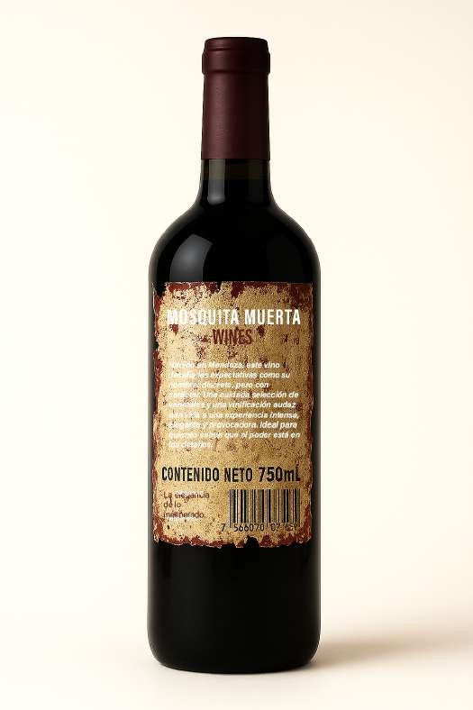
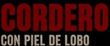
El nombre en mayúsculas condensadas ocupa el centro jerárquico de la etiqueta; el subtítulo lo acompaña con menor peso.
Fotos grandes de cada cara, y la tipografía como bloque siguiente. Claro y completo, pero son dos secciones más para bajar.
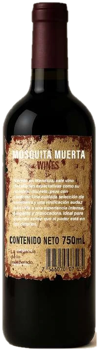
La botella gira: ahora muestra el dorsoEl frente concentra el título, la ilustración y el desgaste. El dorso lleva la marca «Mosquita Muerta Wines» y el contenido neto (750 mL).
El nombre en mayúsculas condensadas ocupa el centro jerárquico de la etiqueta.
No hace falta mostrar dos fotos: la botella 3D gira y muestra el dorso mientras leés. Ahorra una pantalla entera.
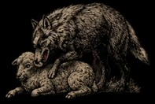
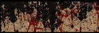
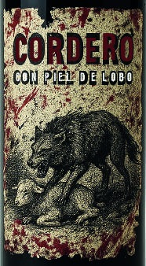
Grilla de piezas. Todo a la vista de una, aunque las imágenes chicas del PDF quedan estiradas.
1 Título jerarquía e impacto · 2 Subtítulo contraste · 3 Ilustración el lobo sobre el cordero, símbolo central · 4 Textura fondo desgastado con marcas rojas.
A la izquierda, la etiqueta plana con números que se encienden a medida que leés cada punto. Las imágenes chicas se usan como detalle, no estiradas.
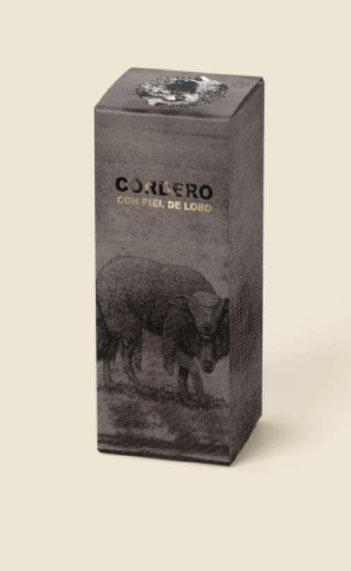
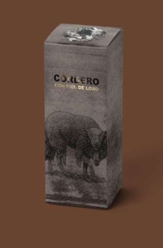
Igual que el resto de la página: dos fotos a lo ancho.
La botella 3D se despide y la página pasa a ancho completo. Mismo resultado que A en esta parte, pero llegaste con la historia ya contada.
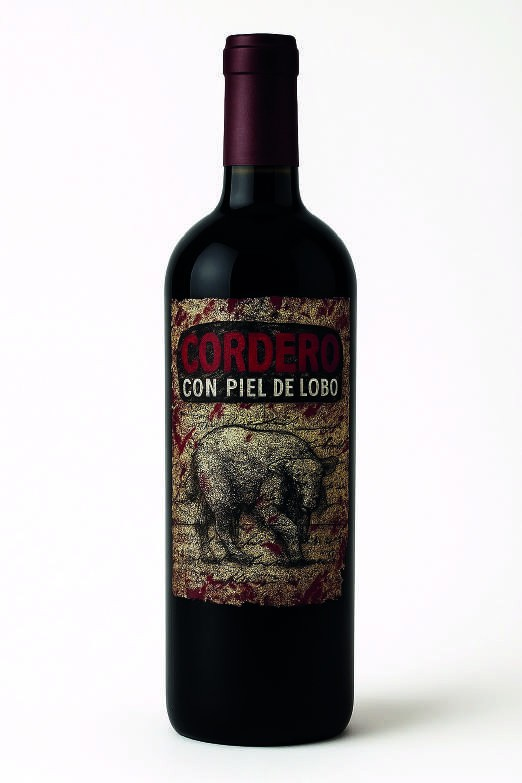
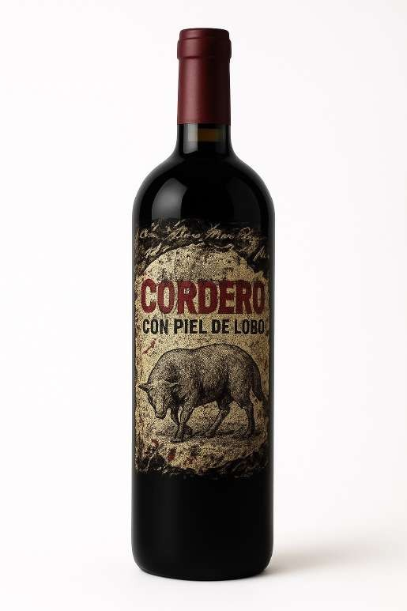
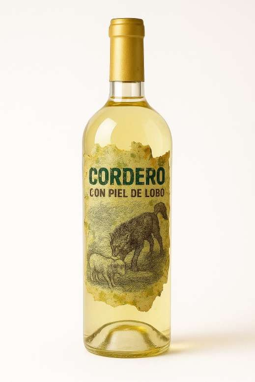
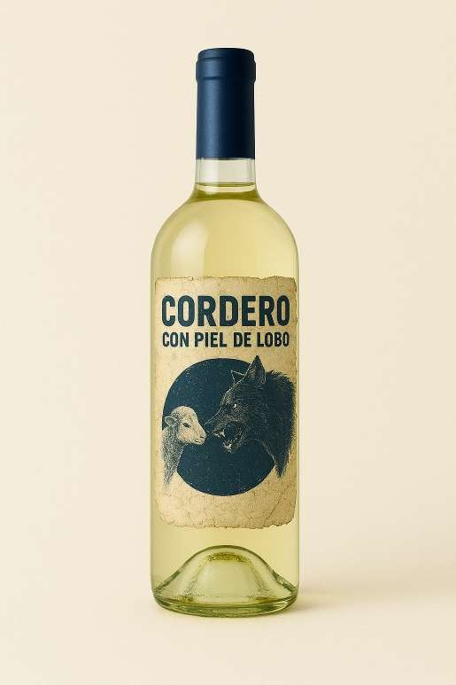
Grilla de variantes.
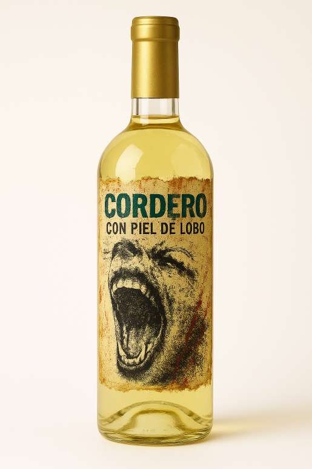
Mismo contenido, como tira que se arrastra (o avanza con el scroll). Más grande cada pieza y ocupa una sola pantalla.
Un bloque grande «Siguiente proyecto». Funciona igual en las dos.
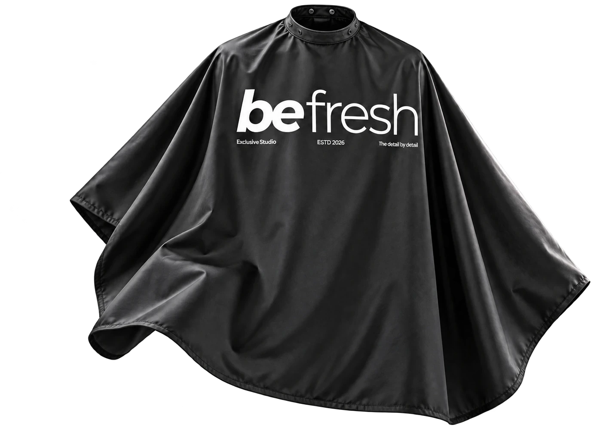
Igual, pero la capa ya asoma y el fondo empieza a cambiar al mundo de la barbería: el recorrido continúa sin cortes.
Es la que mejor continúa lo que la home promete (el objeto y el mundo) y la que menos repite. Para Be Fresh funciona igual: la capa fija a la izquierda mientras se cuentan el sistema de logo, la paleta y la tipografía; las aplicaciones (bolsa, cartel, tarjeta) se abren a ancho completo.